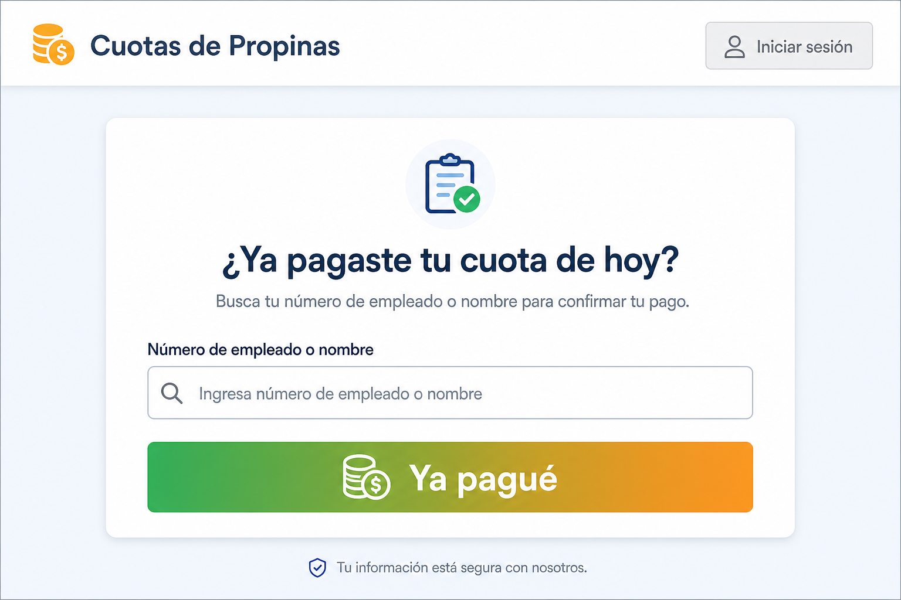
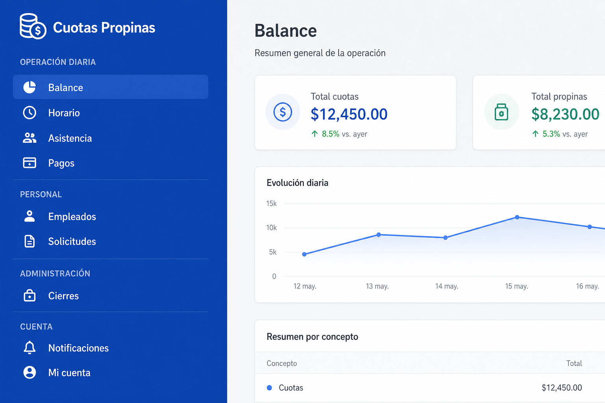
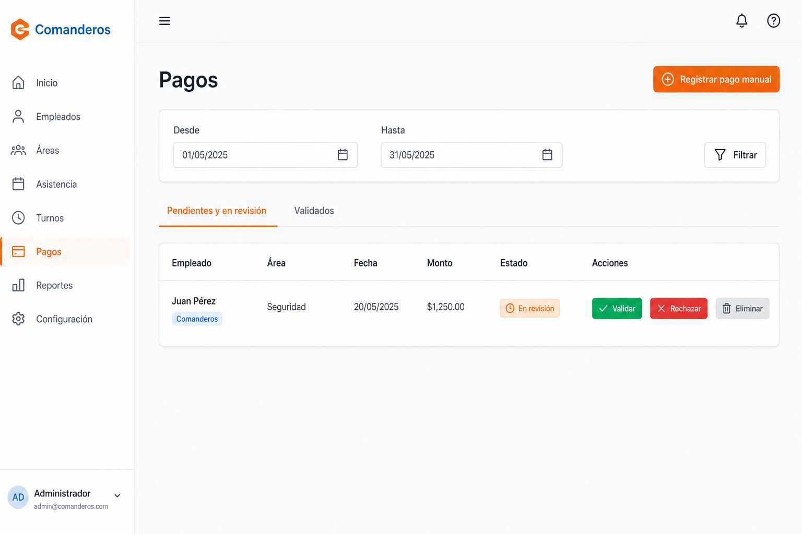
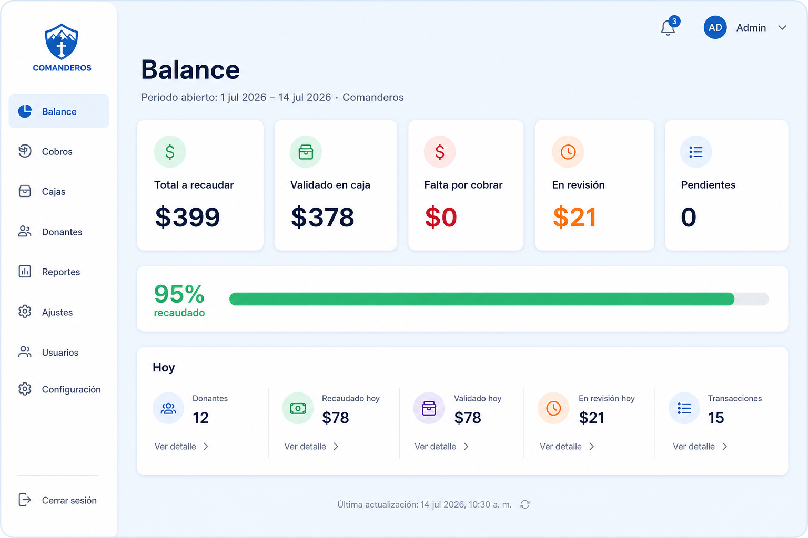

Sistema de Seguimiento de Cuotas de Propinas
https://orusuko.github.io/CinemaQ/
| Paso | Acción |
|---|---|
| 1 | Abre https://orusuko.github.io/CinemaQ/ en el celular o computadora |
| 2 | Busca tu número de empleado o nombre |
| 3 | Elige tu nombre de la lista (verifica el área: Comanderos o Corredores) |
| 4 | Pulsa «Ya pagué» después de entregar el dinero en caja |
| 5 | Listo: tu pago queda en revisión hasta que el administrador lo confirme |
Importante: Marcar en la app no es pagar. Primero entregas el dinero; luego marcas.
Rutina diaria en este orden:
| Orden | Pantalla | Qué haces |
|---|---|---|
| ① | Horario | Marcas quién va a trabajar hoy |
| ② | Asistencia | Confirmas quién asistió (esto genera la cuota del día) |
| ③ | Pagos | Validas lo que los empleados marcaron, o registras pagos manuales |
| ④ | Balance | Revisas cuánto falta por cobrar en el periodo y quién debe |
Acceso: misma URL → Iniciar sesión (arriba a la derecha) → usuario y contraseña.
Registra el cobro diario de la cuota fija de propinas en Comanderos y Corredores.
Funciona con doble verificación:
EMPLEADO ADMINISTRADOR DE ÁREA
───────── ─────────────────────
Entrega dinero en caja → Recibe el dinero
Marca «Ya pagué» en la web → Valida en pantalla Pagos
↓
El pago cuenta como VALIDADO
y suma al Balance
¿Por qué dos pasos? Para que quede registro de quién dijo que pagó y quién en administración lo confirmó. Así se puede demostrar adeudos y evitar confusiones.
| Rol | ¿Necesita login? | Responsabilidad principal |
|---|---|---|
| Empleado | No | Marcar su pago del día |
| Administrador de área | Sí | Horario, asistencia, validar pagos, revisar balance |
Para que un empleado deba pagar hoy, el administrador debe:
Sin asistencia = sin obligación de pago en el sistema para ese día.
[Asistencia registrada]
↓
PENDIENTE ←── El empleado aún no marcó (o fue rechazado)
↓
(empleado pulsa «Ya pagué»)
↓
EN REVISIÓN ←── Esperando que admin valide en caja
↓
┌──────┴──────┐
↓ ↓
VALIDADO RECHAZADO → vuelve a PENDIENTE
(cuenta en
el balance)
En el Balance, estos números no son lo mismo:
| Indicador | Qué significa | Ejemplo |
|---|---|---|
| En revisión | El empleado ya marcó «Ya pagué»; tú aún no validas | $21 en revisión = 1 persona marcó, falta tu confirmación |
| Falta por cobrar | Adeudo real: no ha pagado o fue rechazado y volvió a pendiente | $0 = nadie debe sin haber marcado |
| Validado en caja | Dinero que tú ya confirmaste | Suma al recaudo del periodo |
Si hay $21 «en revisión» y $0 «falta por cobrar», no significa que falten $42. Es el mismo pago en trámite de validación.
El Balance principal muestra el periodo abierto: desde el día después del último cierre contable (o desde el día 1 del mes si no hay cierre) hasta hoy.
Todo usa hora de Ciudad de México (CDMX). Los empleados solo pueden marcar hasta las 23:30 de cada día.

Antes de marcar: asegúrate de haber entregado ya el dinero al administrador de tu área.
1234) o tu nombre (ej. Juan).| Momento | Qué ves tú | Qué pasa en el sistema |
|---|---|---|
| Acabas de marcar | Mensaje de éxito | Tu pago pasa a En revisión |
| Admin valida | (nada en la app pública) | Pasa a Validado — ya contó |
| Admin rechaza | Puedes volver a marcar | Vuelve a Pendiente |
Tú no ves el estado en la página pública. Si tienes duda, pregunta a tu administrador de área.
| Regla | Detalle |
|---|---|
| Una marca por día | Solo marca tu pago de hoy |
| Horario límite | Después de las 23:30 CDMX el sistema puede rechazar la marca |
| No sustituye la caja | Marcar ≠ pagar. Siempre entrega el dinero primero |
| Sin asistencia | Si admin no registró tu asistencia, puede que no puedas marcar o no aparezca obligación |
| Problema | Qué hacer |
|---|---|
| No encuentro mi nombre | Verifica el número; si sigue sin aparecer, avisa a tu admin (puede que estés inactivo o sin alta) |
| Mensaje de error al marcar | Lee el texto: puede ser horario cerrado, ya marcaste hoy, o sin obligación de pago |
| Marqué por error | Avisa de inmediato al administrador — ellos rechazan o corrigen en Pagos |
| Marqué pero admin dice que no aparece | Confirma que elegiste el nombre correcto y el área correcta |
En celular: abre el menú con el icono ☰ (tres líneas, arriba a la izquierda).

Solo verás datos de tu área (Comanderos o Corredores, según tu cuenta).
Cada grupo del menú lateral agrupa pantallas relacionadas:
| Pantalla | Para qué la usas |
|---|---|
| Balance | Ver cuánto se debe y qué falta en el periodo |
| Horario | Quién está programado para trabajar |
| Asistencia | Quién asistió (genera la cuota del día) |
| Pagos | Validar, rechazar o registrar pagos |
| Pantalla | Para qué la usas |
|---|---|
| Empleados | Alta, baja y consulta de personal |
| Solicitudes de área | Pedidos de cambio de área |
| Pantalla | Para qué la usas |
|---|---|
| Cierres de periodo | Ver cortes contables ya hechos (solo consulta) |
| Pantalla | Para qué la usas |
|---|---|
| Notificaciones | Avisos del sistema |
| Mi cuenta | Cambiar tu contraseña |
Objetivo: dejar registrado quién trabaja hoy.
El horario es planificación. La obligación de pago se crea en Asistencia.
Objetivo: registrar quién realmente asistió. Cada asistencia crea la cuota del día para ese empleado.
Eliminar asistencia (con cuidado):
Eliminar asistencia cancela la obligación de pago de ese día.
Objetivo: confirmar en el sistema el dinero que recibiste en caja.

| Estado en tabla | Significado | Qué botón usar |
|---|---|---|
| Pendiente | Debe pagar; no marcó en la app (o fue rechazado) | ✓ Validar si ya te pagó en caja sin marcar |
| En revisión | El empleado pulsó «Ya pagué» | ✓ Validar si recibiste el dinero · ✗ Rechazar si no |
| Cualquiera | Error grave | Eliminar (último recurso) |
Acciones explicadas:
Pago manual (botón naranja arriba):
Pestaña «Validados»:
Objetivo: saber cómo va el cobro del periodo contable abierto y qué hacer mañana.

Al abrir Balance verás:
Encabezado: Periodo abierto: [fecha inicio] – [hoy] · [tu área]
Cinco indicadores principales:
| Indicador | Qué te dice | ¿Clicable? |
|---|---|---|
| Total a recaudar | Todo lo que se debió en el periodo | No |
| Validado en caja | Lo que ya confirmaste | No |
| Falta por cobrar | Adeudo real (solo pagos Pendiente) | Sí → abre detalle |
| En revisión | Empleados que marcaron, falta validar | No |
| Pendientes | Cantidad de personas en estado Pendiente | Sí → abre detalle |
Barra de avance: porcentaje recaudado del periodo.
Bloque «Hoy» (debajo):
Detalle de adeudos (al hacer clic):
Vista histórica (sección desplegable):
Alta de nuevo empleado:
Desactivar empleado:
Traer alguien de la otra área:
Antes de terminar tu turno, verifica:
Alternativa: Registrar pago manual si no aparecía obligación.
Hay una persona que marcó $21 y tú aún no validas:
Cuando valides, los $21 pasan a Validado en caja. Si rechazas, los $21 pasan a Falta por cobrar.
Causas habituales:
| Error / confusión | Causa | Solución |
|---|---|---|
| «Marqué pero sigo debiendo» | Admin no ha validado aún | Normal: estás en revisión. Espera validación o pregunta a admin |
| Balance muestra números «duplicados» | Confundir En revisión con Falta por cobrar | Son métricas distintas (ver sección 2.3) |
| No puedo marcar después de las 11:30 pm | Cierre horario 23:30 CDMX | Marca antes o pide registro manual al admin |
| Validar no hace nada / error | Sesión expirada o sin conexión | Cierra sesión, vuelve a entrar; revisa internet |
| No veo empleados de Corredores | Tu cuenta es solo de Comanderos (o viceversa) | Normal: cada admin ve su área |
| Pago manual rechazado | Ya existe pago para ese día | Usa Validar o Revertir en el pago existente |
| Eliminé asistencia y desapareció el pago | Comportamiento esperado | La obligación se cancela |
| Estado | Color en app | Significado | ¿Cuenta en recaudo? |
|---|---|---|---|
| Pendiente | Amarillo | Debe pagar; no marcó o fue rechazado | No |
| En revisión | Naranja | Empleado marcó «Ya pagué»; falta validar | No |
| Validado | Verde | Admin confirmó en caja | Sí |
| Cancelado | Gris | Obligación anulada (ej. asistencia eliminada) | No |
¿Necesito instalar una app?
No. Solo navegador web con internet.
¿Puedo validar sin que el empleado marque?
Sí. En Pagos, estado Pendiente → ✓ Validar.
¿El empleado ve si ya lo validé?
No en la página pública actual. Debe confirmar contigo si tiene duda.
¿Qué es el periodo abierto en Balance?
El tramo desde el último cierre contable (o inicio de mes) hasta hoy. Ahí ves el adeudo acumulado, no solo el día.
¿Puedo usar el panel en el celular?
Sí. Menú ☰, tablas adaptadas a tarjetas.
¿Quién cambia el monto de la cuota?
El administrador general, en pantalla Cuotas (no está en este manual).
¿Qué hago si el sitio no carga?
Verifica la URL exacta, conexión a internet y prueba otro navegador. Si persiste, contacta al administrador general.
| Necesitas… | Contacta a… |
|---|---|
| Usuario o contraseña del panel | Administrador general |
| Monto de la cuota | Administrador general |
| Corrección de un pago / error operativo | Tu administrador de área o administrador general |
| El sitio no abre o errores técnicos | Administrador general / soporte TI |
URL del sistema: https://orusuko.github.io/CinemaQ/
Manual de usuario v1.2 · Sistema de Cuotas de Propinas · Julio 2026